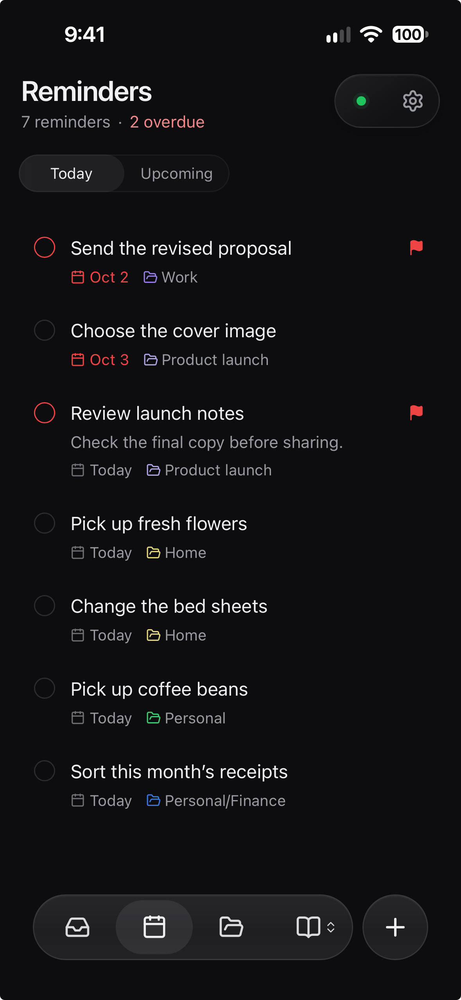
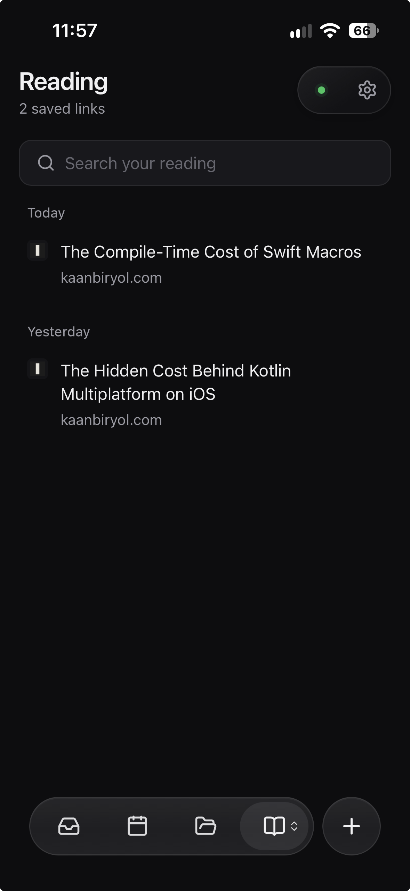
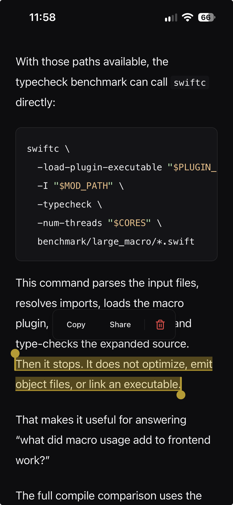
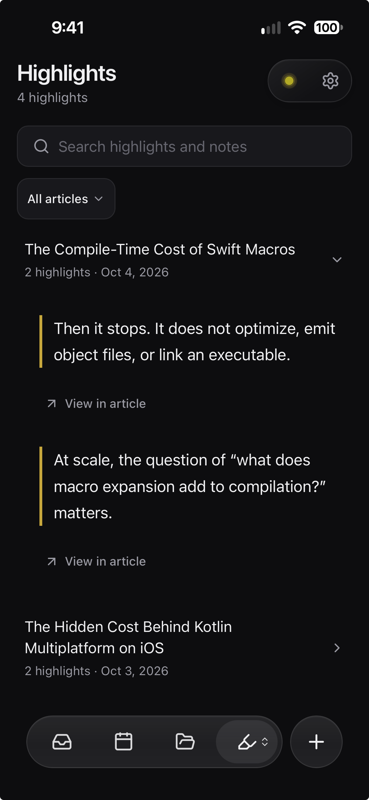

Cloudflare
Connect your account in Obsidian. Crate guides you through creating the server and storage for your vault.
- Stays available while your computer sleeps.
- Enable R2 in your account. Usage charges may apply.
Your notes, reminders, and saved articles. Together in your Obsidian vault.
Beta release · Installs with BRAT


Keep writing in Obsidian on desktop or mobile. Crate syncs your vault through a server in your Cloudflare account or on your own hardware.
Edited the same note on two devices? Compare both versions and choose what to keep.
Select a preview to explore.

Conflicting copies are kept for review. See the affected notes together, then open a comparison.

See exactly what changed. Keep either version, keep both, or combine your edits into a custom result.
See what’s changing before you sync, and what was included afterward.

Compare edits and choose which files to sync.

Check recent transfers and the files included in each sync.
Revisit an earlier file or a saved state of your vault.

Compare earlier versions with your current file and restore a saved copy.

Browse saved sync points, inspect changed files, and restore an earlier state.
Optional · Cloudflare & self-hosted
Keep your synced content private from your server. Notes, attachments, saved articles, and reminder text are encrypted on your devices.
Set up encryptionYour keys, on your devices. Enable encryption in Crate settings and save your recovery key outside your vault. It also protects existing synced files and retained history.
Content stays private. Some metadata stays visible. Your server still sees file paths, sizes, and notification times. Your local Obsidian files stay readable.
Add reminders while you work in Obsidian. Write “tomorrow at 10” and use # to choose a project.
Keep a live reminder list beside your writing in a daily note, project page, or dashboard.

Keep your reminders with you. Plan, organize, and make space for routines on your phone.
Select a preview to explore.

Capture reminders now and organize them later.
See what’s due today and next, and catch overdue reminders.

Organize related reminders and track progress.

Move a reminder into the right project.

Update its title, date, project, or priority in one place.

Set a date and time.

Repeat daily, weekly, or monthly.
Get a nudge when it’s due. Enable notifications to see reminders on your lock screen.
A home for the articles you want to come back to. Read, highlight, and add your own notes in Obsidian or the Crate web app.
Select a preview to explore.

Keep saved articles in one place. Find your next read with search.

Save passages as you read. Opened article text stays available offline.

Search your highlights across articles and jump back to the original passage.
Explore Reading Included with Crate.
Sync through your own Cloudflare account or a server you control.
Your notes stay local in Obsidian. Crate syncs changes through your chosen server to your other devices.
Connect the web app for your reading and reminders on the go. Both hosting options work the same way, with no separate Crate account.
Connect your devicesOptional end-to-end encryption protects your content on either host. File paths, sizes, and notification times remain visible to your server. Keep a separate backup.
Get started
Install Crate in Obsidian, then connect your Cloudflare account or your own server for sync and the web app.
Requires Obsidian 1.13.0+. Desktop reading also works without a server. Read the setup guide
BRAT installs and updates beta plugins in Obsidian. Find BRAT in Settings → Community plugins. Install and enable it.
In Settings → BRAT, select Add beta plugin. Paste this repository, choose the latest release, and add the plugin. Then enable Crate in Community plugins.
kaanbiryol/obsidian-crateOpen Settings → Crate → Connect with Cloudflare to create or select a cloud server. For self-hosting, select Connect to your server and enter your server address and pairing code.
Install Crate through BRAT on each Obsidian device and connect to the same server. Use the Crate web app for reading and reminders on your phone.
A few practical details
What you need to know about cost, hosting, and your data.